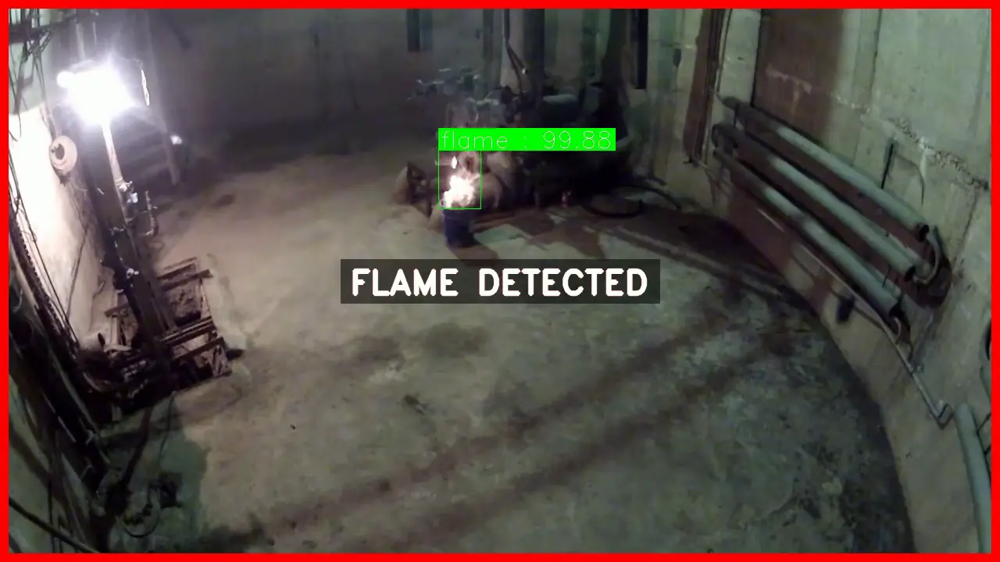

í•œêµì–´
í•œêµì–´
í•œêµì–´
í•œêµì–´

Fire and smoke are among the most time-critical threats in monitored environments. Early and accurate detection can prevent catastrophic damage across industrial sites, warehouses, and public infrastructure. This project develops a real-time fire and smoke detection system for the AXEyes video analytics platform, achieving 89% mAP by combining spatio-temporal action recognition with frame-sequence analysis. A key architectural decision was made early: RF-DETR single-frame inference was evaluated but abandoned due to excessive false positives caused by objects visually similar to fire and smoke — lighting, steam, reflections. The final system treats fire as a temporal action rather than a static object, reducing false alerts by 25%.
RF-DETR Evaluation and Pivot: RF-DETR was initially evaluated for single-frame fire and smoke detection. Per-frame inference proved unreliable due to high false positive rates from visually similar objects such as steam, bright lighting, and reflections. The system was redesigned around spatio-temporal multi-frame inference to detect fire as a dynamic action rather than a static appearance.
Spatio-Temporal Detection with YOWOv3: Fire and smoke events are detected across consecutive frame sequences, capturing the motion and spread dynamics that distinguish genuine fire from visually similar static objects, significantly improving detection reliability in complex surveillance scenes.
3D CNN Backbone Adaptation: The Efficient-3DCNNs codebase was reproduced, extended, and adapted from human action classification to fire-smoke video classification. This model served as the temporal backbone for YOWOv3, with a custom fire-smoke video dataset built from scratch for domain adaptation.
25% False Alert Reduction: Frame-sequence confidence aggregation filters ambiguous detections before triggering alerts, substantially reducing false events caused by non-fire visual patterns in real CCTV footage.
Production Deployment: Integrated into the AXEyes VA system monitoring 100+ critical infrastructure CCTV cameras across enterprise and government-level facilities.
The project began by evaluating RF-DETR for single-image fire and smoke detection. Testing revealed that per-frame inference generates excessive false positives — objects such as steam vents, bright light sources, reflective surfaces, and white smoke-like backgrounds are visually indistinguishable from fire and smoke in a single frame. This led to the decision to treat fire detection as a temporal action recognition problem, requiring multi-frame sequence modeling rather than single-image object detection.
YOWOv3 combines a 3D CNN for temporal modeling across frame sequences with a 2D CNN for per-frame spatial feature extraction. This dual-stream architecture captures both the spatial appearance of fire and smoke and their temporal spread and motion dynamics, enabling reliable detection under complex real-world surveillance conditions including low lighting, partial occlusion, and camera angle variation.
The Efficient-3DCNNs repository was reproduced, modernized with the latest PyTorch version, and extended with DDP (Distributed Data Parallel) for multi-GPU training to accelerate experimentation. A custom fire-smoke video classification dataset was built from real surveillance footage and publicly available fire-smoke video sources, covering diverse fire types, smoke densities, environments, and lighting conditions. This adapted 3D CNN served as the temporal backbone for YOWOv3.
A high-quality video dataset was curated covering diverse fire and smoke scenarios: open flame fires, smoldering smoke, mixed fire-smoke events, and hard-negative samples including steam, bright lights, and reflective surfaces. Careful temporal annotation of fire onset, spread, and dissipation ensured the model learns precise action boundaries rather than static appearance.
Confidence scores are aggregated across the temporal frame window before an alert is triggered. This suppresses single-frame anomalies caused by lighting changes or brief visual artifacts, reducing false event alerts by 25% compared to per-frame inference approaches.
| Metric | Value |
|---|---|
| mAP | 89% |
| False Alert Reduction | 25% |
| Detection Type | Spatio-Temporal (multi-frame) |
| Initial Model Evaluated | RF-DETR (single-frame) |
| Final Model | YOWOv3 + Efficient-3DCNNs backbone |
| Deployment | AXEyes VA System |
| Monitored Cameras | 100+ critical infrastructure CCTV |